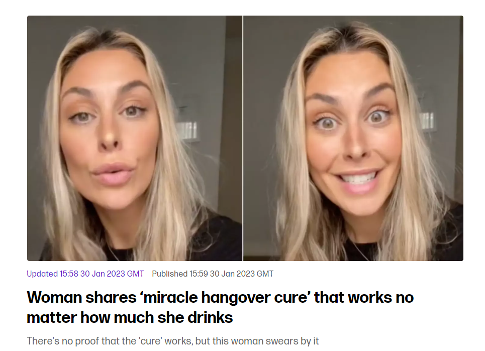

fact_check gavel trending_up compare_arrows quiz insights
Three Claims
An Interrogation Tool for Consumers of Research
Dave Brocker
| Aspect | Variable | Constant |
|---|---|---|
| Example | Age of participants (18, 25, 40…) | All participants are 25 years old |
| Example | Type of therapy (CBT, DBT, psychoanalysis) | All participants receive CBT only |
| Example | Reaction time on a cognitive task | All participants finish in exactly 30 seconds |
| Example | Classroom temperature (varies by room) | Temperature held at 72°F in every room |
| Example | Number of siblings (0, 1, 2…) | All participants are only children |
| Role in research | Helps identify relationships, effects, or trends | Used to control conditions / ensure uniformity |
| Measured or manipulated? | Yes — either, depending on study design | No — typically held constant to reduce confounding |
How a variable comes to have its value: recorded as it naturally occurs, or assigned by the researcher.
Recorded as it naturally occurs – the researcher observes and records a value that already exists (e.g., a participant’s age, their score on a mood survey).
Controlled by the researcher – participants are assigned to specific levels of the variable (e.g., randomly assigned to a caffeine or no-caffeine condition).
| Variable | Operational Definition | Levels | Measured or Manipulated? |
|---|---|---|---|
| Car ownership | Circled “I own a car” / “I do not own a car” | 2 levels | Measured |
| Expressing gratitude to a partner | Agreement with items like “I tell my partner often that s/he is the best” | 7 levels (1–7) | Measured |
| Exposure to disinformation | Heard false information once or twice | 2 levels | Manipulated |
| Disgust Sensitivity | Score 0–4, higher = more disgusted | Continuous | Measured |
| Level of anxiety | Heart-rate monitor; >2 SD above baseline BPM = high anxiety | Continuous | Measured |
An operational definition turns a vague concept into something you can actually measure or manipulate.
Every research claim falls into one of three types: Frequency, Association, or Causal.
A frequency claim describes how often something occurs in a population — no comparison, no relationship, just a rate.
A frequency claim about two variables at once — how they move together.
Amount of weekly exercise ↔︎ Income
Less exercise → lower income. More exercise → higher income. (Both go the same direction.)
Amount of coffee consumption ↔︎ Degree of depression
Less coffee → lower depression. More coffee → higher depression. (They move in opposite directions.)
An association is not a cause
Knowing two variables move together tells you nothing yet about whether one causes the other — that’s the whole reason Causal Claims get their own, stricter set of rules.
Time of dinner ↔︎ a second variable that doesn’t reliably move with it — no consistent pattern either direction.
Once you know two variables are associated, you can predict one from the other — but prediction is not the same as causal control.
A causal claim says one variable produces a change in another — the strongest, and hardest to earn, of the three claim types.
Causal claims need three things
Covariance, temporal precedence, and internal validity (ruling out other explanations) — each gets its own deep dive in the Four Validities lecture.
A Clockwork Orange, The Shining, Wednesday — internet claims that this camera angle (chin down, eyes up) reliably signals “this character is unhinged.” Is that a real pattern, or pattern-matching after the fact?
It’s an actual finding, not just internet lore
Levesque et al. (2025, Journal of Nonverbal Behavior) had 137 participants rate downward-tilted (“Kubrick stare”) vs. upright faces on creepiness. Kubrick-stare faces were rated significantly creepier across the board – and the effect was even stronger for male faces (\(\eta_p^2\) = .45) than female faces (\(\eta_p^2\) = .33).

“You just need folic acid, B complex — this stuff makes your pee bright yellow — and magnesium. Combine those three with a bit of water and — chef’s kiss — no hangover! Coming from the queen of hangovers, try it.”
The whole point of this course
Learning to tell the difference between a claim like this one and a claim backed by actual research.